SERVICIOS
Aquí encontrarás todos los servicios que ofrecemos en BAJO VIGILANCIA MUSIC.
¿Cómo puedo contratar sus servicios?
Puedes contactarnos a través de nuestro formulario en la página de contacto o enviándonos un correo electrónico a: music@bajovigilancia.com.
La mayoría de nuestros servicios son online, por lo que te responderemos lo antes posible y además podremos conectar por video llamada para aclarar cualquier duda sobre tu proyecto.
MEZCLA
Realizamos la limpieza de tus pistas, ajustamos la ecualización, la dinámica, el tono y el volumen en consonancia con el estilo y la intención artística del proyecto.
Trabajamos tanto con instrumentales como con voces, asegurando un sonido profesional y equilibrado entre los distintos elementos de la mezcla.
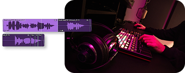
Mezclar una canción es el proceso de combinar y ajustar todas las pistas de audio grabadas (como voces, instrumentos y efectos) para que suenen de manera equilibrada y coherente. Esto incluye:
Edición y limpieza de audio
Ecualización y Balance
Compresión
Dinámica y Volumen
Efectos y Procesamiento
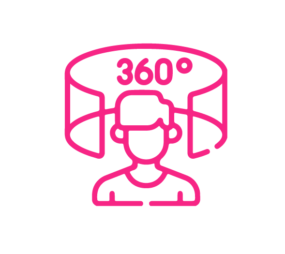
Imagen estereo
MASTERING
Contamos con una sala de monitorización acústicamente tratada y con un equipo de alta calidad para garantizar un resultado profesional.
Optimizamos tu track, ajustando ecualización, dinámica y volumen para asegurar que suene bien en todos los sistemas de reproducción y plataformas digitales.
Podemos trabajar con un solo archivo de audio que incluya la mezcla final de las voces sobre la instrumental. Aunque personalmente nos gusta que nos enviéis las 2 pistas separadas (la vocal y la instrumental) para tener más control sobre el proceso.
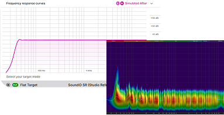
Hacer un “Master” de una canción es el último paso en el proceso de producción musical, que consiste en preparar la grabación final para su distribución. Esto incluye:
Ecualización y Balance
Compresión
Volumen
Edición final
Formato y Metadatos
DISEÑO
Ofrecemos un servicio de diseño integral, cualquier idea que tengas la transformamos en una imagen única.
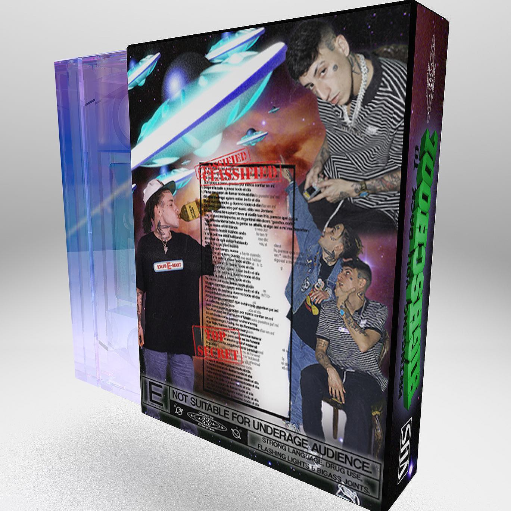
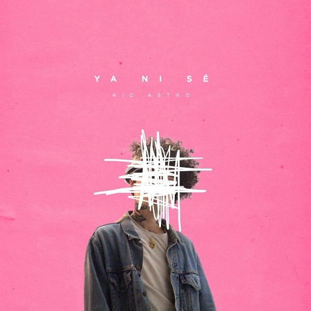
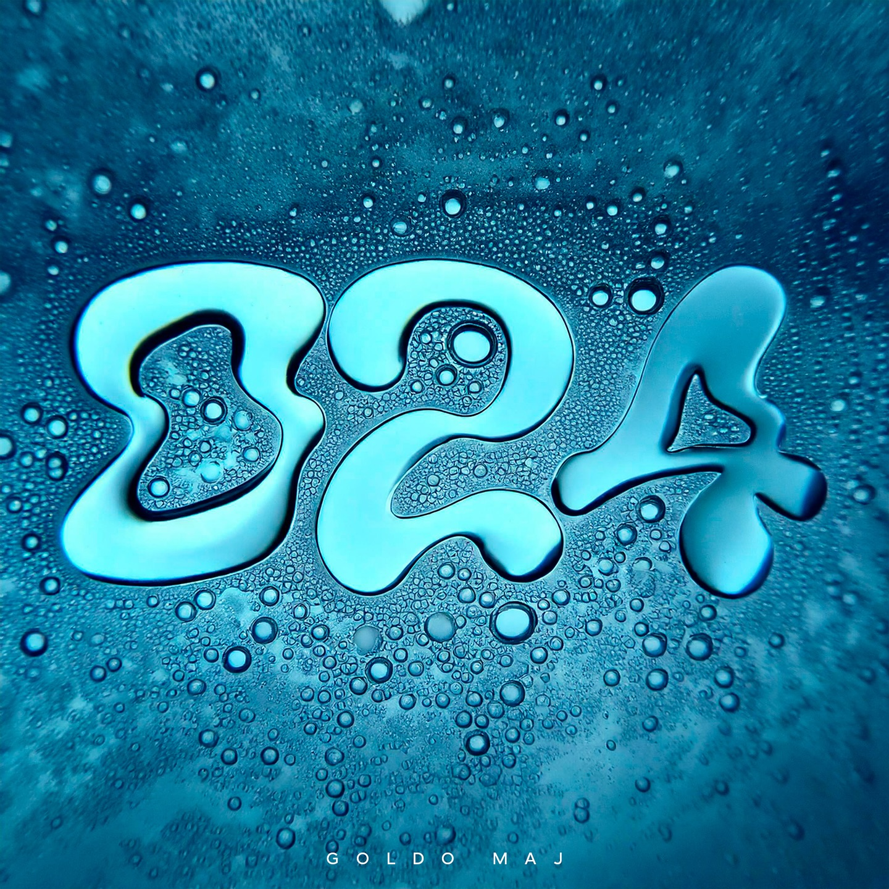
ESTUDIO
Todos nuestros servicios están disponibles de manera online. Pero si vives en Asturias o te apetece visitar esta maravillosa provincia también puedes venir a nuestro estudio.
Aquí os dejamos una muestra de nuestro espacio de trabajo con una actuación en vivo de uno de los integrantes de nuestro equipo.
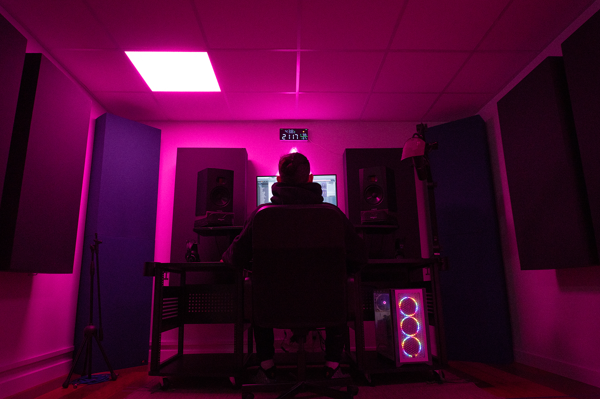
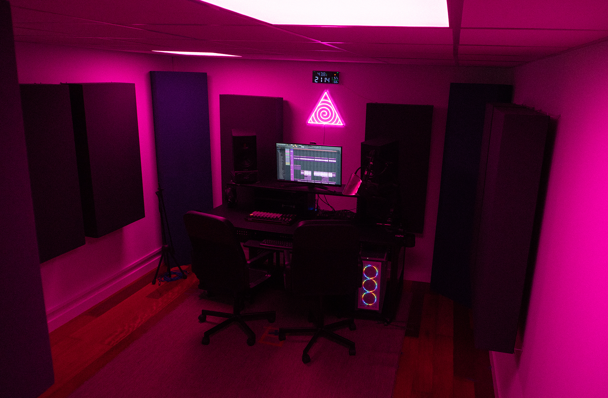
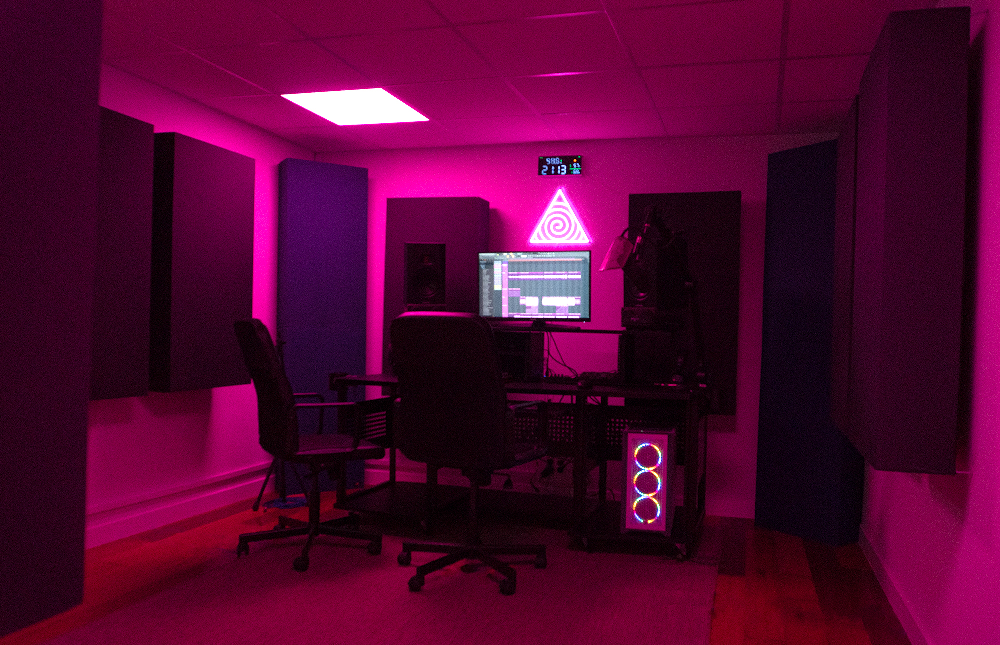
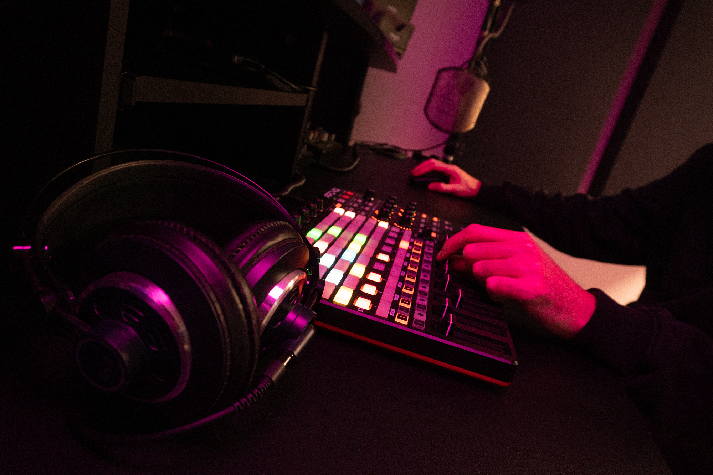
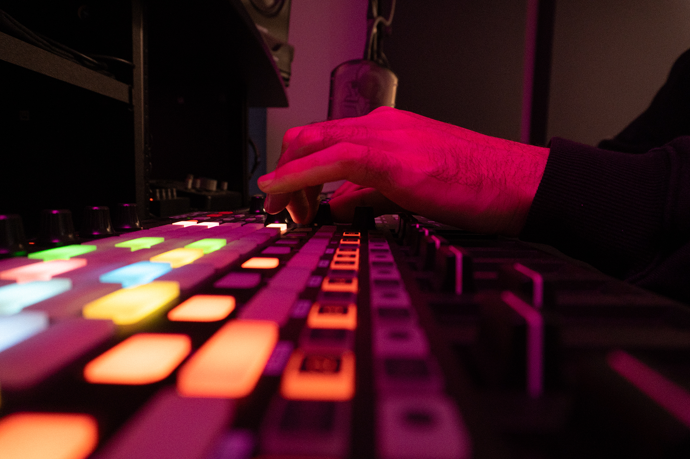
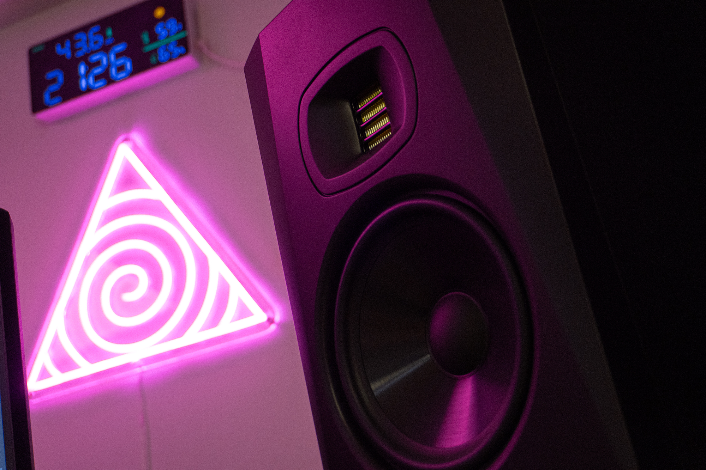
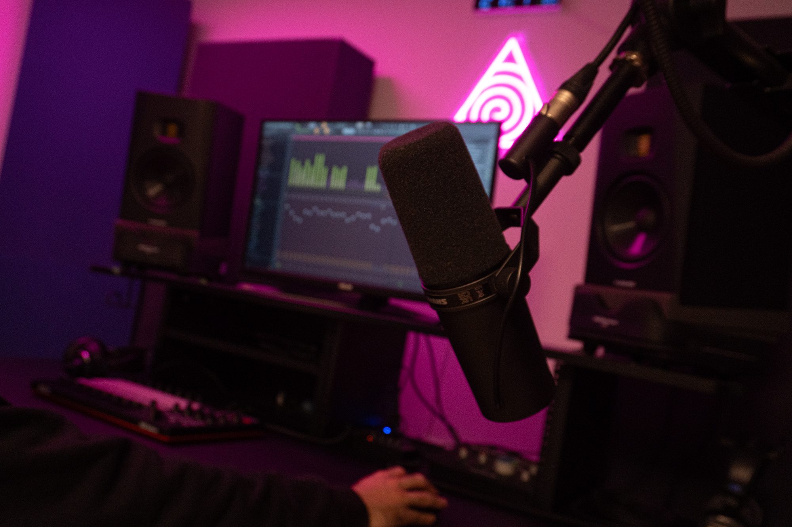
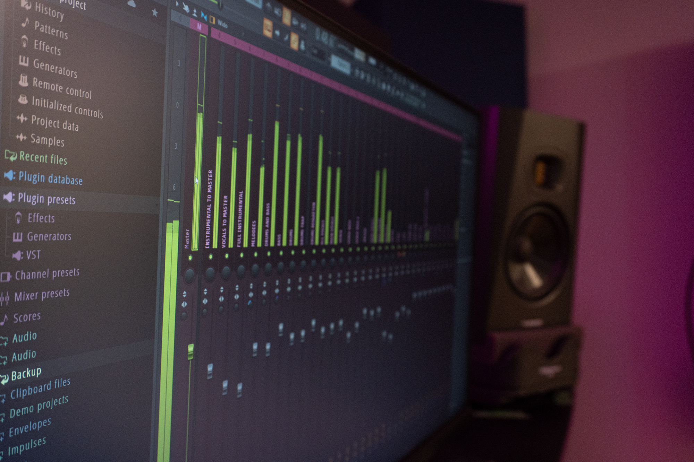